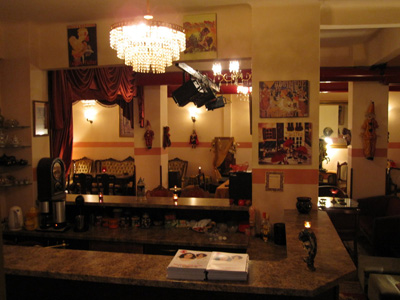
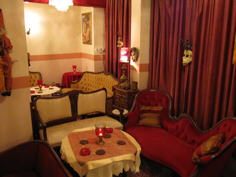
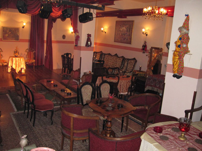
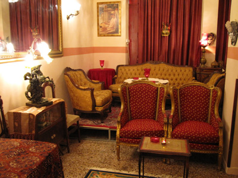
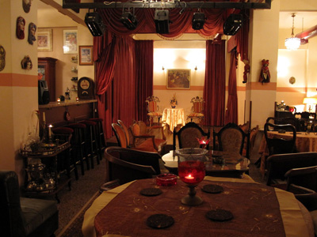

|
Η Θεατρική Ομάδα ΠΟΛΙΤΕΙΑ ΘΕΑΤΡΟΥ δημιουργήθηκε τον Φεβρουάριο 2007 & απέκτησε νομική υπόσταση τον Μάιο 2007.
Ο τίτλος της ομάδας- εμπνευσμένος από την Πολιτεία του Πλάτωνα- δίνει και το στίγμα μας, στο βαθμό που η συμμετοχή στο θεατρικό γίγνεσθαι και πράττειν συμβάλλει στην εμπέδωση της «κατανόησης» και της «ανεκτικότητας», μια βασική φάση ατομικής και κοινωνικής εξέλιξης προκειμένου να καταστεί δυνατή η όποια βελτίωση των «κακώς κειμένων», με στόχο τη δημιουργία μιας ευνομούμενης πολιτείας. Πάνω απ’ όλα, η συμμετοχή στα θεατρικά δρώμενα είναι μια διαδικασία «συλλογική», η οποία ευνοεί τη «συμφιλίωση», την «αλληλεγγύη» και την «συνεργατικότητα», αφού ο στόχος είναι η επιτυχής επίτευξη μιας κοινής δημιουργικής δραστηριότητας. Περαιτέρω, δίνει τη δυνατότητα καλλιέργειας της φαντασίας, της ατομικής απελευθέρωσης αλλά και της προσωπικής βίωσης σκέψεων, συναισθημάτων και δράσεων διαφορετικών ατόμων, κοινωνικών και εθνικών ομάδων της παρελθούσας αλλά και της σύγχρονης πραγματικότητας. Πράγματι, κυρίαρχο στοιχείο στο Θέατρο είναι το Εμείς και όχι το Εγώ. Μέσα από τη συμμετοχή στη θεατρική διαδικασία-είτε σαν ερμηνευτής, είτε σαν θεατής-μετουσιώνει και τελικά γίνεται συνοδοιπόρος των ενδιαφερόντων και προβλημάτων που αφορούν τους συνανθρώπους του,
Θέλοντας να συνεισφέρουμε-στο μέτρο των δυνάμεών μας- προς αυτή την κατεύθυνση:
• Την άνοιξη του 2007 παρουσιάσαμε παραστάσεις μας σε διάφορα Δημοτικά Θέατρα της Θεσ/νίκης (Θέρμης-Νεάπολης-Σταυρούπολης-Αμπελοκήπων), στο Θέατρο Φοιτητικών Εστιών Θεσ/νίκης και στο Θέατρο Σοφούλη.
• Μεταξύ πολλών υποψηφιοτήτων επιλεχθήκαμε μεταξύ των έξι (6)τελικά διαγωνιζομένων στο 3ο & 4ο Φεστιβάλ Ερασιτεχνικών Θεατρικών Ομάδων (2007-2008) που διοργανώνει κάθε χρόνο ο Δήμος Νεάπολης Θεσ/νίκης¨
• Μεταξύ 100 περίπου υποψηφίων θεατρικών ερασιτεχνικών ομάδων επιλεχθήκαμε μεταξύ των έξι (6)τελικά διαγωνιζομένων στο Πανελλήνιο Φεστιβάλ Ερασιτεχνικού Θεάτρου Ν. Ορεστιάδας (17-10-2007).
• Στο Φεστιβάλ ΑΥΛΑΙΑ-ΚΑΛΑΜΑΡΙΑ 2010 παρουσιάσαμε το Νοέμβριο 2010 στο Δημοτικό Θέατρο Καλαμαριάς ΜΕΛΙΝΑ δύο (2) παραστάσεις: α)Παράσταση-Αφιέρωμα στον Άντον Τσέχωφ για τα 150 χρόνια από τη γέννησή του με τα καλύτερα κωμικά μονόπρακτά του: Πρόταση Γάμου-Η Αρκούδα-Η Επέτειος και β)στα πλαίσια της βραδιάς κατά του ρατσισμού-καλύπτοντας τη θεατρική έκφραση του όλου ζητήματος-παρουσιάσαμε δύο (2) Μονόπρακτα: Αριάν της Μαρίας Μπαλτατζή και Σας Αρέσει ο Μπράμς της Μάρως Δούκα.
• Από τον Μάρτιο 2007 έως & Μάιο 2011 η Ομάδα μας παρουσίασε συνολικά στους συμπολίτες μας 52 Μονόπρακτα της ελληνικής & ξένης δραματουργίας:
Ξένη Δραματουργία:Η Αδέσμευτη-Λαίδη Φθεϊροζόλ-Προς Κατεδάφιση-Το Σκοτεινό Δωμάτιο-Το Πορτραίτο Μιας Μαντόνας του Τέννεση Ουίλλιαμς, Πρόταση Γάμου-Η Αρκούδα-Η Επέτειος-Η Προξενήτρα-Οι Βλαβερές Συνέπειες του Καπνού-Όλια Μια Ψυχούλα του Άντον Τσέχωφ, Ο Εραστής του Χάρολντ Πίντερ (Διασκευή Μ.Μπαλτατζή), Οι Εραστές του Χάρολντ Μπριγκχάουζ, Γύρισα Σπίτι του Ντάριο Φο(Διασκευή Μ.Μπαλτατζή), Κρεβάτι Ανάμεσα στις Φακές του Άλλαν Μπέννετ(Διασκευή Μ.Μπαλτατζή), Ένα Ηλιόλουστο Πρωϊνό των Αφων Κιντέρο, Ανθρώπινη Φωνή-Το Φάντασμα της Μασσαλίας-Η Ψεύτρα-Στο Πανηγύρι Την Έχασα του Ζαν Κοκτώ. (20)
Ελληνική Δραματουργία:Ο Μπιντές-Η Μπουχάρα –Το Ρολόι –Διακοπή Ρεύματος- Η Μεγάλη Κομπίνα-Η Απαρηγόρητη Χήρα του Κώστα Μουρσελά, Με το Νόμο της Κωστούλας Μητροπούλου, Φοράω τα Καλά Μου-Η Λάμπα-Μια Παλιά Ιστορία-Ταξί! Ε! Ταξί-Γλυκά μου Ζώα του Γιώργου Μανιώτη, Μικρή Αγγελία του Περικλή Κοροβέση (Διασκευή Μ.Μπαλτατζή), Μπλαντιμέρι- Γιατί Ψηφίζω Δεξιά του Γιώργου Σκούρτη-Ο Δάσκαλος (Μονόλογος από το Εσωτερικές Ειδήσεις του Μάριου Ποντίκα)-Όμορφα Φθινοπωρινά Τριαντάφυλλα (Διασκευή Μ. Μπαλτατζή) & Ας Ανακεφαλαιώσω από το Γυναίκα Λούζερ της Βίλης Σωτηροπούλου-Σας Αρέσει ο Μπραμς της Μάρως Δούκα- Ιωσήφ ή Αλβέρτος του Ιωσήφ Αναστασίου- Ραντεβού Για Τέσσερις του Ζάχου Βασιλείου (Διασκευή Μ. Μπαλτατζή)-Γνωριμίες της Έφης Βούρα –Facebook & Ραντεβού του Δημήτρη Αδαμίδη-Βασικές Απορίες του Γιώργου Θεοδωρίδη - Αν Ζούσα των Μ. Μπαλτατζή/Κώστα Σωτηριάδη- Γιατί Γιαγιά της Μ. Μπαλτατζή(από ιδέα του Ζάχου Βασιλείου)- H Αληθινά Δυνατή/Περί Πορνείας /Ευτυχώς Ή Δυστυχώς Εγώ Θα Ζήσω/Η Θεατρίνα/Αριάν της Μαρίας Μπαλτατζή (32)
Σε μια προσπάθεια-η οποία και θα συνεχιστεί- να ενθαρρύνουμε την θεατρική γραφή στην πόλη μας αλλά & στον ευρύτερο βορειοελλαδικό χώρο παρουσιάσαμε αρκετά Μονόπρακτα συμπολιτών μας & μελών-μαθητών της Ομάδας μας: Γνωριμίες της Έφης Βούρα -Νεολέρος: Facebook /Ραντεβού (Μιμητική Δράση)του Δημήτρη Αδαμίδη-Αν Ζούσα του Κώστα Σωτηριάδη-Βασικές Απορίες του Γιώργου Θεοδωρίδη (μαθητές)-Ιωσήφ ή Αλβέρτος του Ιωσήφ Αναστασίου (συμπολίτη μας)- Γιατί Γιαγιά /Ραντεβού Για Τέσσερις (και τα δύο σε Διασκευή Μ. Μπαλτατζή) του Ζάχου Βασιλείου (συμπολίτη μας).
Συνολικά τις παραστάσεις μας εκτός έδρας έχουν παρακολουθήσει πάνω από 3000 άτομα, ενώ στο Θεατρικό Σαλόνι μας (Ολύμπου 88) από της ιδρύσεώς του μέχρι και σήμερα (Φθινόπωρο 2008-Άνοιξη 2011)τις παραστάσεις μας κάθε Παρασκευή-Σάββατο-Κυριακή ( 230 παραστάσεις έως & Μάιο ‘11) έχουν παρακολουθήσει πάνω από 5000 θεατές.
Στις παραγωγές της ΠΟΛΙΤΕΙΑΣ ΘΕΑΤΡΟΥ τους ρόλους ερμηνεύουν τα μέλη μας, στα οποία & προσφέρεται όλη εκείνη η απαραίτητη θεωρητική και πρακτική υποδομή ώστε να μπορέσουν να εκφράσουν όσο το δυνατόν καλύτερα - με σώμα, ψυχή και μυαλό – συναισθήματα, σκέψεις και προβληματισμούς. Έτσι διδάσκονται Αυτοσχεδιασμός, Υποκριτική, Σκηνοθεσία, Σκηνογραφία, Ενδυματολογία, Κινησιολογία, Ορθοφωνία, Χορός, Ιστορία (Κοινωνική-Πολιτική-Οικονομική), Ιστορία Τέχνης, Ιστορία Θεάτρου.
Το Θεατρικό Σαλόνι μας στην Ολύμπου 88 (Σεπ/ριος 2008)έγινε με στόχο να προσφέρουμε -σε όσους φίλους μας επιθυμούν να παρακολουθήσουν το αποτέλεσμα της δουλειάς μας- τέρψη περισσοτέρων από μιας αισθήσεων-όπως συνήθιζαν οι αρχαίοι κάτοικοι αυτού εδώ του τόπου-δηλαδή τέρψη όρασης, ακοής, όσφρησης, γεύσης & πάνω απ' όλα ψυχής. Έτσι οι φίλοι μας μπορούν να απολαύσουν το ποτό τους μαζί με συνοδευτικά σε όλη τη διάρκεια της παράστασης, αλλά & μετά από αυτήν, ακούγοντας μουσική απ' όλο τον κόσμο μέσα στο ζεστό, οικείο & φιλικό περιβάλλον της θεατρικής μας στέγης & συζητώντας για όσα μας χαροποιούν, μας πονάνε ή μας προβληματίζουν.
Για την ΠΟΛΙΤΕΙΑ ΘΕΑΤΡΟΥ
Μαρία Μπαλτατζή
 
 

• Η Μαρία Μπαλτατζή γεννήθηκε & ζει στη Θεσσαλονίκη.
• Μητέρα δύο παιδιών, του Θανάση & του Θωμά.
• Καθηγήτρια Αγγλικών, Μεταφράστρια, Διερμηνέας.
• Σπούδασε επίσης Δημόσιες Σχέσεις, Δημοσιογραφία, Θεατρικές Σπουδές (Ηθοποιία, Σκηνοθεσία, Σκηνογραφία, Θεατρική Συγγραφή), Ευρωπαϊκό Πολιτισμό.
• Επιστημονικός Συνεργάτης & Συντάκτρια Μελετών σε Εταιρίες Ευρωπαϊκής Ανάπτυξης.
• Υπάλληλος του Υπουργείου Μακεδονίας-Θράκης για 26 χρόνια-από Μάιο 1982 έως & Ιούλιο 2008,οπότε & αποχώρησε-στα Τμήματα Επαρχιακού Τύπου, Παιδείας, Πολιτιστικής Κληρονομιάς & Σύγχρονου Πολιτισμού.
• Συμμετείχε στα κοινά σαν Πρόεδρος Σ.Γ.Κ. του Ιδρύματος Βρεφονηπιακών Σταθμών Δημοσίων Υπαλλήλων Θεσσαλονίκης.
• Ιδρυτικό Μέλος & Ταμίας του Συλλόγου Υπαλλήλων Υ.ΜΑ.Θ.
• Αντιπρόεδρος του Πολιτιστικού Συλλόγου ΟΛΥΜΠΙΑΣ Άνω Πόλης Θεσσαλονίκης.
• Γραμματέας της Ένωσης Ποντιακής Νεολαίας Ελλάδος.
• Υπεύθυνη Καλλιτεχνικών & Πολιτιστικών Αποστολών στο εξωτερικό.
• Αντιπρόεδρος του Πανελλήνιου Φοιτητικού Συλλόγου του Ελληνικού Ανοικτού Πανεπιστημίου, κ.α.
• Παρουσιάστρια & υπεύθυνη επιμέλειας ραδιοφωνικής εκπομπής με τίτλο "Πολιτιστικά Νέα της πόλης μας" στο ραδιοφωνικό σταθμό Θεσσαλονίκης "Γνώμη του Πολίτη".
• Μέλος χορευτικής επαγγελματικής ομάδας παραδοσιακών, λαϊκών & μοντέρνων χορών.
• Σπουδάστρια ακόμα στο θέατρο (1996-2001), συμμετείχε σε πρωταγωνιστικούς ρόλους στα έργα: Όπερα της πεντάρας του Μ. Μπρεχτ-Αναφορά στον Φρόυντ του Χ. Παπαστεργίου-Τρωϊκός Πόλεμος- Παραμυθολογία Α.Ε. του Δ. Χονδρόσμου-Τραγίλογοι (Αποσπάσματα Αρχαίων Ελληνικών Τραγωδιών)-Το Κόκκινο Ρομάντζο του Α.Γκέλμαν-Νύχτα Γενεθλίων του Σ. Παρχαρίδη.
• Συμμετοχή στο Διεθνές Φεστιβάλ Scampa στο Ελ Μπασάν της Αλβανίας με την παράσταση Τραγίλογοι.
• Παράδοση θεατρικών μαθημάτων(θεωρία & πράξη)στο θεατρικό εργαστήρι που δημιούργησε η ίδια στο Υπουργείο Μακεδονίας Θράκης το 2006.
• Την θεατρική περίοδο 2007-2008 ερμήνευσε μονόλογους & μονόπρακτα της ελληνικής & διεθνούς δραματουργίας σε διάφορα Αrt Cafe της πόλης μας.
• Συγγραφή Θεατρικών Μονοπράκτων: Η Εκδρομή-Η Αληθινά Πιο Δυνατή-Περί Πορνείας-Ευτυχώς ή Δυστυχώς Εγώ Θα Ζήσω-Η Επαγγελματίας-Η Θεατρίνα-Αριάν-Αν Ζούσα (Συ-συγγραφή με Κώστα Σωτηριάδη)-Γιατί Γιαγιά (Βασισμένο στο Γιατί Παππού του Ζάχου Βασιλείου). Συγγραφή τρίπρακτης κωμωδίας με τίτλο Εμείς γι' αλλού κινήσαμε κι αλλού...η ζωή μας πήγε.
• Δημιούργησε την θεατρική ομάδα ΠΟΛΙΤΕΙΑ ΘΕΑΤΡΟΥ το 2007 (Αστική Μη Κερδοσκοπική Εταιρία), στην οποία & είναι Διοικητική Υπεύθυνος.
· Το καλοκαίρι του 2008 αγόρασε & διαμόρφωσε σε Θεατρικό Σαλόνι το χώρο όπου στεγάζεται πλέον μόνιμα η θεατρική ομάδα ΠΟΛΙΤΕΙΑ ΘΕΑΤΡΟΥ.
• Διδασκαλία του θεατρικού γίγνεσθαι & πράττειν στα μέλη & φίλους της ΠΟΛΙΤΕΙΑΣ ΘΕΑΤΡΟΥ, ώστε να μπορέσουν να εκφράσουν όσο το δυνατόν καλύτερα - με σώμα, ψυχή και μυαλό – συναισθήματα, σκέψεις και προβληματισμούς.
• Επιλογή Έργων-Διδασκαλία Ρόλων-Σκηνοθεσία-Μουσική Επένδυση-Σκηνογραφία & Επιμέλεια Κουστουμιών όλων των Μονοπράκτων (52) που παρουσίασε η ΠΟΛΙΤΕΙΑ ΘΕΑΤΡΟΥ από το 2007 (έτος ίδρυσης της ομάδας) έως & σήμερα.
• Για την ΠΟΛΙΤΕΙΑ ΘΕΑΤΡΟΥ ερμήνευσε τα Μονόπρακτα: Γύρισα Σπίτι του Ντάριο Φο (Διασκευή δική της)-Κρεβάτι Ανάμεσα Στις Φακές του Άλλαν Μπέννετ(Διασκευή δική της)-Ο Εραστής του Χάρολντ Πίντερ(Διασκευή δική της)-Η Ψεύτρα του Ζαν Κοκτώ-Η Αρκούδα-Όλια Μια Ψυχούλα του Άντον Τσέχωφ-Η Αδέσμευτη-Λαίδη Φθεϊροζόλ-Το Πορτρέτο Μιας Μαντόνας του Τέννεση Ουίλλιαμς-Όμορφα Φθινοπωρινά Τριαντάφυλλα της Βίλη Σωτηροπούλου (Διασκευή δική της)-Η Απαρηγόρητη Χήρα-Το Ρολόι-Η Μπουχάρα του Κώστα Μουρσελά-Με Το Νόμο της Κωστούλας Μητροπούλου-Η Αληθινά Πιο Δυνατή της ιδίας-Περί Πορνείας της ιδίας-Η Θεατρίνα της ιδίας. (17 Μονόπρακτα)
• Εμπνεύστρια και παρουσιάστρια τηλεοπτικής εκπομπής, στην οποία παρουσιάστηκαν θεατρικά σχήματα της πόλης μας, προκειμένου να μπορέσουν οι συμπολίτες μας να γνωρίσουν τα τοπικά θεατρικά σχήματα και τους συντελεστές τους.
• Πρόεδρος της Ένωσης Θεατρικών Σχημάτων Μακεδονίας-Θράκης από το 2009.
• Εμπνεύστρια & Εκδότρια εφημερίδας της Ένωσης Θεατρικών Σχημάτων Μακεδονίας-Θράκης.
• Βραβεύτηκε για την προσφορά της σαν ηθοποιός, σκηνοθέτης, θιασάρχης & για την γενικότερη συμβολή της στην προώθηση του θεατρικού γίγνεσθαι & πράττειν το Νοέμβριο του 2010 στο Φεστιβάλ ΑΥΛΑΙΑ –Καλαμαριά 2010 (σύμπραξη Δήμου Καλαμαριάς & πολιτιστικού περιοδικού ΑΥΛΑΙΑ).
Τηλέφωνα επικοινωνίας: 2310272909-2310285452-6974195079
Ιστοσελίδα: www.politeiatheatrou.blogspot.com
e-mail: politeiatheatrou@gmail.com
|